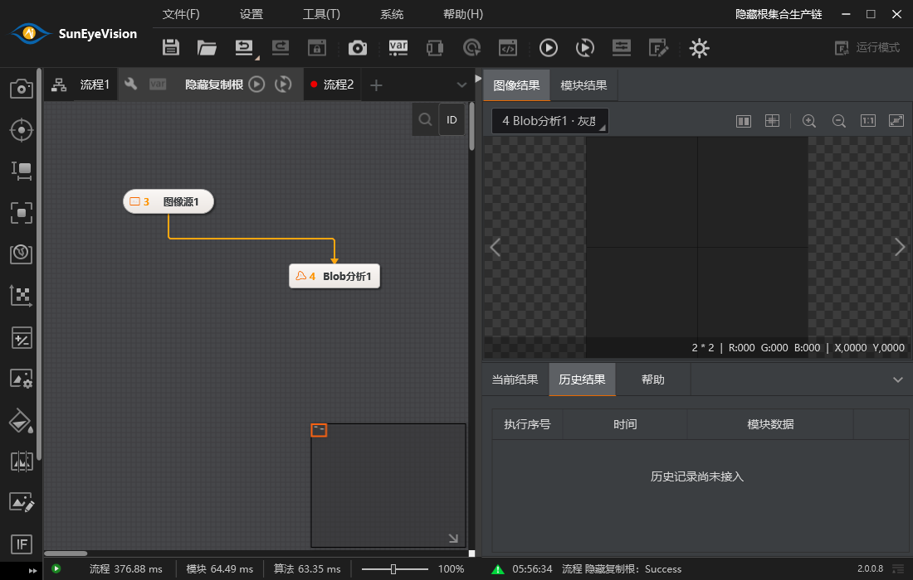
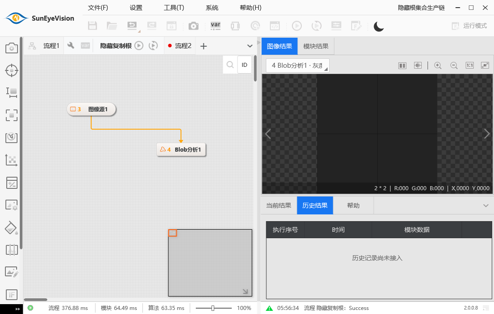

基线 b9271da3f；新独立树 platform-root-collection-ui-20261104 / codex/platform-root-collection-ui-20261104。根已授权本批设计后集中实施，不再等待接口批准。共享集合内核669/676已实际通过Editing39/Graph39与真实复制执行保存重开；这些核心证据不替代本批真实主窗验收。
延续原76/W01–W05与全平台矩阵。复用原ShellWorkspaceControl Tab头部、加号、右键菜单、行内名称及总览Ctrl拖镜像；不重绘、不新增排序入口。原证为既有《流程Tab及节点整根复制静态交接-20261104.md》（SHA 5EC3618EAF519967811A6620527C5950CDF69E8B176A8BCEEE4DAC071F927671）及根集合主设计：原Move明确NotImplemented，所读头部只选择；64字符与禁用字符有静态依据。Trim、OrdinalIgnoreCase唯一、默认流程n与源名_副本n FirstFree属于已批准本方政策。原厂native根外IO补接未证，不称完全等价。Group/循环继续暂停。
| 当前位置—差异 | 复用/调整决策 | 完整验收出口 |
|---|---|---|
| MainWindowRootWorkspace四操作皆Unavailable；现CanEditRootWorkspace把所有pending/参数窗统一挡住 | 增加根集合专用门禁：实际session、无正式/连续预约、无过渡关闭、无私有debug在途、无集合重入；普通参数草稿允许参与统一Flush。其它配置/画布门禁保持原职责。Add/Copy/Rename/Delete全部使用Host.BeginRootCollectionEdit。 | 菜单/加号实际执行；参数窗有合法未应用值时复制包含该值；非法原文本整体拒绝且不丢文本；持续运行/Paused禁止。 |
| 先TryCommitEditors会产生第二历史 | 一次性IDocumentEditParticipant以固定scopeKey注册，编辑窗与集合由Editing.Apply全体Prepare后Combine；不预Apply参数，不先Add空根再Paste。Copy只调用draft.Copy，内部唯一片段构造由共享核心处理。 | 复制当前源参数、内部引用、显示与根代理、源变量producer不抢占；只有一条历史；失败编号不泄漏。 |
| WorkflowTabControlViewModel只监听Session替换；roots变化不会增删Tab | 订阅实际session.Changed的ChangedRoots，通知期只排队；回执完整结束后按实际WorkflowDefinition引用对账，保留仍在live的原Tab/画布/视口/节点选择，退出者Dispose并解除回调，新发布者建立新Tab。Undo复活实体仍新Tab，不复活旧cap。 | 外部正式集合提交、Undo/Redo、打开重开均相同；旧同ID Tab/假root拒绝，原root删除后迟到操作不命中复活的新scope。 |
| Tab.ConfirmRename先改本地Name再通知；失败会假改名 | 以同步返回成功的实际根Rename请求替代预写Name事件，Name由提交后对账更新。RenameBuffer有修订号；失败保原文本并继续编辑，Prepare后产生的新原文本不被receipt清空；Esc无事务。 | 空/禁字/长度/重名失败不改历史、Tab和Domain；Trim改名同步总览/producer显示，Undo/保存重开一致。 |
| 当前集合通知可使deleted root旧画布GetNodes抛异常 | Tab/主窗只在通知后同步，不能提交前撤画布。DocumentCanvasProjection实际root成员守卫由C唯一修改，本线提出接缝并集成其固定补丁，不按ID替身、不修改C文件。 | 删除整根LastObserverError为空；reader/编辑窗取消释放；Undo同实体旧cap仍失效。 |
| 入口 | 候选和提交 | 成功/失败与选择 |
|---|---|---|
| 新增：Tab加号/空页添加 | 最终live根名FirstFree“流程n”，追加到根子序列末；临时句柄仅草稿所有，不创建预览Tab。 | 回执AcceptedRoots查实际新根后选择；失败名称编号/历史/当前选择全不动。 |
| 复制：右键复制/总览Ctrl拖 | 捕获实际source及Session；名为截断后仍合法的“源名_副本n”FirstFree，插在源根后；可选总览坐标传draft.Copy，同一个候选/history。 | 正常选择实际副本；若回执后仍有新用户私有输入，则保原Tab/窗口，提示副本已创建，不为自动选择丢新输入。资源基址仍Session.ResourceBaseDirectory。 |
| 改名：Enter/失焦 | 唯一集合草稿Rename实际root；合法同名无变化不记假历史。Name不写RootConfigurationEditDraft。 | 保原Tab/画布/viewport/节点选择与现结果，producer显示由Domain正式提交更新；Esc只退出输入。 |
| 删除/关闭根Tab | 原YesNo确认，否不创建草稿；至少一根在UI及core双校验。默认RejectReferenced；producer或设备通信硬引用拒绝且保源，不静默清空，不新增未证“待重绑”对话。 | 删除非选中根保选中；选中根删除后选择原索引相邻保留根。失败原Tab/窗口/结果和历史不动；成功后已退役编辑窗按实际对象失效清理。 |
| Undo/Redo/打开重开 | 共用现Session history/V4，无UI目录镜像、不自建历史。只监听实际root内容和顺序；没有排序UI。 | 仍在live的Tab尽量复用；退出再Undo新建Tab，旧cap不复活；新Session全替换，旧订阅/queued action按实例token拒绝。 |
临时集合参与者仅拥有RootWorkflowCollectionEditDraft；IsValid仅检查当前实际Session和自身未退出，不能因准备忙或pending就注销。Prepare要求同Host，冻结本草稿并不发布；Acknowledge先记录真实receipt，再Host.RebaseAcceptedDraft(draft,proposal,receipt)，释放旧草稿。accepted句柄不能作为live操作对象。任何窗口Flush/引用/候选验证失败由Editing保持所有草稿，finally注销并Dispose临时集合参与者。已提交后其它参与者Acknowledge失败仍记录实际提交与警告，按真实receipt对账，不当作事务失败回滚。
Session.Changed仅发排队通知，Tab对账不插在Prepare与Acknowledge之间；显式入口在Apply返回后立即对账，排队项后续幂等。不会在通知期调用CheckReadiness/打开编辑scope。保留Tab实际实例比较，拒string查回同ID旧/假实体。重入集合调用由短期busy拒绝；运行中导航可用但根结构编辑不可用。选择切换前若还有新pending输入，保当前选择；删除当前根的私有新输入不能静默扔掉，应由整体验证/退出失效清理语义明确记录，测试冻结后输入反例。
本线：MainWindowRootWorkspace、新RootCollectionEditParticipant（UI）、MainWindowDocumentHistory的通知收尾、MainWindowViewModel根集合/Tab回调与门禁通知、WorkflowTabControlViewModel及WorkflowTabViewModel两partials、MainWindowRootOverview、ShellWorkspaceControl根菜单/行内编辑/Add/Delete部分、UI.Tests根集合专属用例与ShutdownLifecycleProbe根集合模式。C唯一：App.xaml.cs/MainWindow.xaml.cs/Toolbox/catalog/图标与DocumentCanvasProjection实际成员守卫。根唯一：RuntimeNodeConfigurationControl/ProductionEditorContext/Plugin.Wpf与共享Application/Domain/Persistence/Execution。无共享合同修改。Directory退役/V4损坏/跨root producer引用由现core验证，不以UI裸写绕开。
| 范围 | 实际证据要求 |
|---|---|
| 增改删复制/重开 | 真实DocumentSession与Workspace组合；新根/复制仅一历史、Name/FirstFree/至少一根；copy节点连接输入显示/代理/源变量producer；保存重开再执行副本HALCON。 |
| 输入/失败与身份 | 真实参数窗pending和原始非法文本、冻结后新输入保留；取消/重名/源scope失效/同ID伪Tab/删根依赖失败不改选择或历史；Undo恢复原实体但旧呈现cap失效；删除observer无错误。 |
| Busy及生命周期 | 连续Waiting/Paused结构入口禁用，Stop排空后恢复；实际根Tab删除确认否/是、旧窗口关闭、保存及主窗关闭；无UI调度/第二history。 |
| 隐藏真实主窗 | 复用原有native隐藏App宿主与正式资源，在真实MainWindow加号/Tab菜单/行内名称/总览Ctrl复制回调走生产入口，保存重开与删除/撤销，最后主窗Close排空、插件/Dispatcher/OLE/desktop释放退出0。 |
| 构建与界限 | 新worktree正常Release、只取项目引用不复制别树产物。UI/tests与全量sln分别记录；原证静态、候选自测、主线集成、用户外观/VS/硬件/原厂动态差分独立，不用测试数量宣称全平台76完成。 |
基线与职责：独立树 platform-root-collection-ui-20261104，从 b9271da3f 新建；C e7f0f3fe4仅取GetNodeCatalog新partial与Canvas实际根/目录投影两个必要接缝。Canvas在C父提交和根b927的blob相同，三方增量核收无冲突；App/MainWindow.xaml.cs/Toolbox/Plugin.Infrastructure及C测试均恢复b927原字节，未整文件覆盖C闭包，两接缝不纳本线提交。本线仅主窗根集合、Tab/Overview、根菜单及专属UI回归；不修改共享Application/Domain/Execution、C的App/MainWindow.xaml.cs/Toolbox/catalog、根Blob参数控件或Plugin.Wpf。
| 已有位置—差异 | 实施与优化效果 | 验证与边界 |
|---|---|---|
| MainWindowRootWorkspace四操作原Unavailable；Tab先假改名 | 新增/复制/改名/删除经唯一RootCollectionParticipant与全编辑窗Prepare/Flush合成一个Proposal/历史；AcceptedRoots指向实际发布实例，Rebase后才对账Tab。名称同值直接结束，不提交其它私有参数；合法64位名称复制FirstFree不拆Unicode代理对。 | 真实参数窗当前值被源与副本同时接受；非法原文本整体拒绝；回执期间新输入保留原窗口/原Tab；取消名称、重复/禁字/长度、至少一根、失败编号和历史不泄漏。 |
| 集合改变不增删Tab；提交前切选中会丢草稿 | 按实际Session/WorkflowDefinition引用保留现有Tab、画布、视口和节点选择；通知期只排队，全部回执后对账；退出根同步记退休标记并清源剪贴板、稍后释放订阅；即使Remove→立即Undo未泵UI，旧Tab也不复活或接受选择。已删除根的节点/根配置窗口同步取消并注销，根切换保同Session变量窗口及私有输入；Undo恢复实体但不恢复旧Tab/结果cap。仍有新pending输入时不自动切到副本。 | 假同ID Tab/旧Tab拒绝；原件现读节点剪贴板在根改名后不粘贴旧FullName，Undo名称后可继续；source producer实际变量显示随改名，依赖删除拒绝保源。 |
| 复制可能被拆成Add空根再Paste | 只调用正式draft.Copy；源节点/输入/显示/连线/根参数由唯一共享构建器重映射，当前源参数参与同一候选，UI不克隆图。总览Ctrl复制位置同一历史；陈旧document/revision请求拒绝。 | ImageLoad→Blob副本实际HALCON、保存写出/从副本路径重开/再次HALCON通过。右键无显式总览坐标时保持源WorkspaceSettings；Ctrl拖传确定位置，不新增未证自动避让策略。 |
| Busy与异常/关闭 | 运行/连续Waiting/Paused、私有debug在途、切换关闭或目录退役禁止结构操作；停止排空后恢复。至少一根双层校验。提交后观察者/回执刷新失败明确提示“已提交但视图未刷新”，不做伪回滚。 | 真实连续预约门禁；实际主窗加号、模板右键菜单、行内Enter、删除No/Yes、Undo、保存重开和Close，消费者/插件/Dispatcher/OLE/desktop清洁释放。 |
最终验证：独立树最小C接缝完整Release 0错，最终完整UI回归225/225、0跳过（root-collection-delivery-tests.log/TRX）；根集合生命周期专项18/18，覆盖总览/Unicode/根名剪贴板/同名无变化/观察者与删除立即撤销/旧窗口、全局变量窗口输入保留。最后仅退休Tab选择守卫增量另跑专项，构建及回归记录以交付日志为准。隐藏实际主窗 root-collection-main 最终退出0；深浅主题RenderTargetBitmap来自同一正式窗口，已检查根Tab、名称、连线/结果组合，无本批布局裁切；不是原厂动态差分或用户外观签收。
首轮7事实5过2失败完整保留：已预报的旧画布删除查询退役root由C固定守卫修复；同路径Open按正式合同复用原Session，测试改为真实写出的副本路径重开。后续命名边界与同名无变化、异常提示均新增真实回归，不删原需求。日志/TRX、源码与产物SHA、载荷清单归本树Release/_validation/RootCollectionUi-20261104。


未做与人工安排：VS实际设计器、原厂运行差分、用户物理鼠标OLE/IME/多DPI与外观、真实相机硬件均未验；目录退役/V4损坏保护复用既有核心/文档打开链证据，本批未另起硬件或目录卸载专用UI探针。后续人工集中核Tab菜单/长名、原文本保留、总览Ctrl复制、保存重开和两主题。原76/W01–W05及20工具全平台矩阵不缩；排序原件Move为NotImplemented，不新增排序入口；Group/新循环暂停，原件native根IO/根外前驱未证细节及其余工具仍按原清单跟踪。候选源码/本树自测/主线集成/人工分别记录。
完整UI设计与本批记录 · 共享事务原主设计 · 固定源码交接。本节为根集合UI最新表述；下方早前在途记录按其当时基线保留。
根b927加C最小两接缝，Canvas三方基线blob相同；C其它文件/测试均恢复根原字节。最终完整Release 0错/3283警告（root-collection-final-build.log）。完整UI225/225、0跳过（root-collection-delivery-tests.log）；最后仅退休标签选择守卫增量，最终受影响根集合18/18、0跳过（root-collection-verified-last-tests.log），不称最后一轮又全跑225。真实主窗最终root-collection-verified-last-main.log退出0，当前页面两张PNG来自该同版窗口。
Removed通知同步标记旧Tab退休并清源剪贴板、取消注销已删节点/根配置窗口，资源与Tab集合仍在回执后对账；Remove→立即Undo无UI泵不会复活旧Tab/窗口/clip，退休选择请求不清掉其它live根选择。Tab导航仅取消节点范围编辑，保留同一Session变量窗及其私有输入。上述包括真实窗口与私有文本回归。Host.OwnsRoot(rootDraft)代次准确性已报共享负责人，本线不改共享合同，UI通过明确Removed退休保障旧窗不复活。
初次整C源码对齐成绩仅作为定位；经根提醒恢复b927并重走最小三方接缝后，重做正常完整构建、全UI和隐藏主窗，未以旧候选冒充。一次构建与测试交叠造成8个文件占用错误，等待退出后无交叠重建0错；失败日志全部保留。VS/用户人工与原厂动态/物理OLE/IME/多DPI/相机仍未验，不影响本批自测闭口；排序不增、Group暂停与全平台矩阵不变。